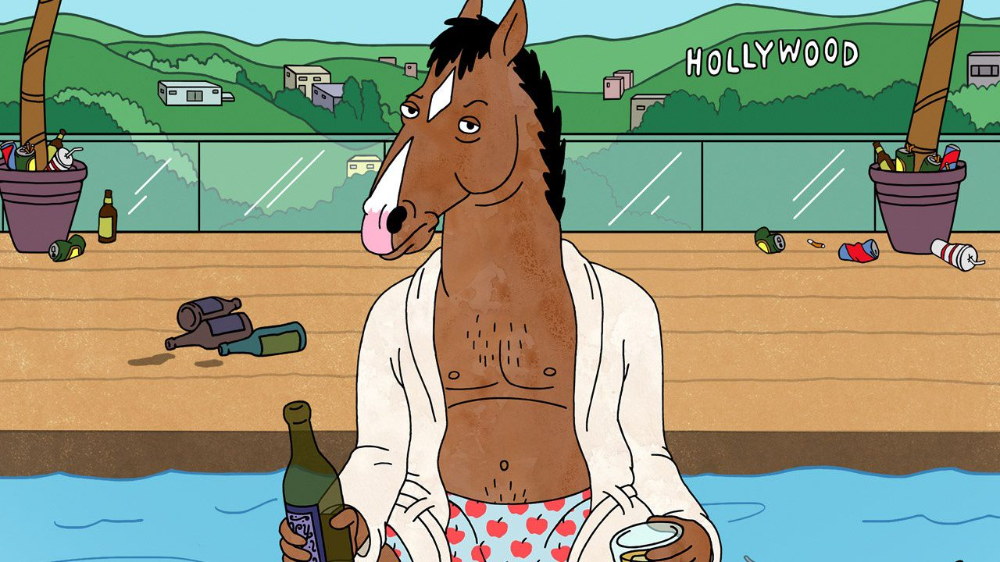
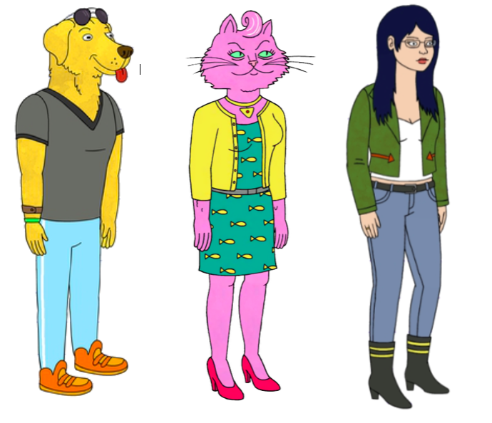

BoJack Horseman is an animated TV series from Netflix, originally premiering on August 22, 2014. It follows BoJack, an anthropomorphic horse who used to star in the popular fictional 1990s TV sitcom Horsin' Around. Twenty years later, BoJack's fame has dried up. The series tells the story of BoJack trying to rekindle his fame by writing a tell-all memoir, and also documents all the marvelous mishaps and strange situations he and his friends get themselves into in the fictional parody of Hollywood, "Hollywoo" (the letter "D" was destroyed in the series).
Country: USA
Language: English
Release Date: 22 August 2014(USA)
Rutine: 25 min
BoJack's Friend - Mr. Peanutbutter | the ex & former agent - Carolyn | His ghostwriter(Mr. Peanutbutter's Wife)-Diane
